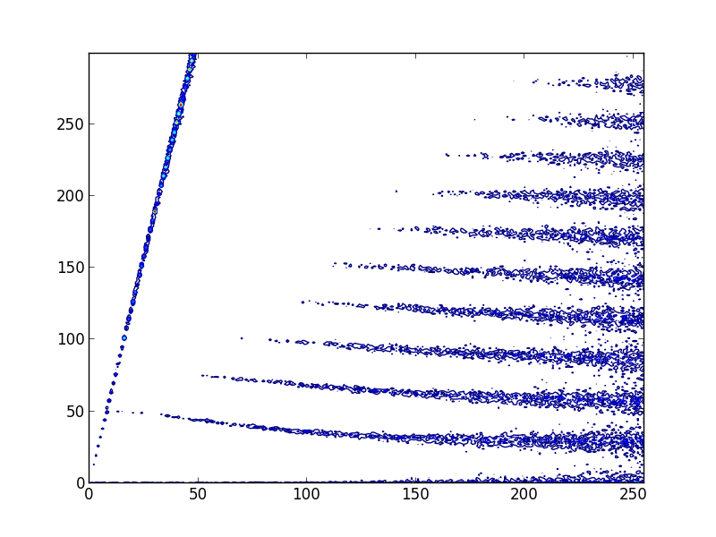
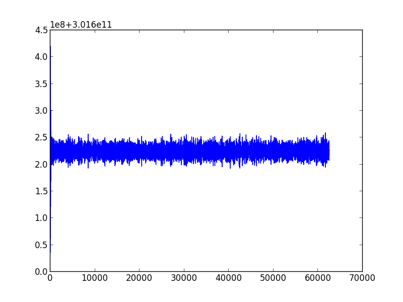

Example 2: Calculate Dispersion Relation of Ion Bernstein Waves Using the SymPIC Code
1 Introduction
Ion Bernstein waves (IBWs) are a nearly electrostatic waves that propagating perpendicular to external magnetic field. Their frequency is approximately at \(\omega_{ci}\), where \(\omega_{ci}\) is the ion cyclotron frequency, which is far lower than the cyclotron frequency of electrons. So to resolve the dispersion relation of IBWs directly using electromagnetic PIC method, a lot of timesteps are required and the long term conservation property of the algoritm becomes crucial. For more information of IBWs, section 11 of the book Waves in Plasmas can be referred.
2 Parameter setup
Considering a 1D plasma, external magnetic field is at \(z\) direction, charged particles are deuteriums and electrons, the configuration file can be as follows.
(
begin (
defmacro many-define lst
(
cons '
begin (
map (lambda (x)
(cons 'define x))
lst)))
(
many-define (REAL_DX
8.00000000000000038e-04)
;Grid size is 8e-4m
(REAL_MU0 (
* 4 m_pi
9.99999999999999955e-08))
;\mu_0 in the vaccum, m_pi is a build-in constant which defines the value of pi
(REAL_NE
1.00000000000000000e+20)
;Number density is 1e20m^-3
(REAL_ME
9.10000000000000006e-31)
(REAL_E
1.60199999999999998e-19)
(REAL_C
2.99792458000000000e+08)
;Set real mass, charge of electron and light speed
(DELTAT
5.00000000000000000e-01)
; Time step \Delta t = 0.5 \Delta x / c
(E (
* REAL_E (
sqrt (
/ REAL_MU0 REAL_ME REAL_DX))))
; Normalized charge of one electron
(CONST_E_DENSITY (
* REAL_NE REAL_DX REAL_DX REAL_DX))
; Normalized number density
(NPG0
256)
; Number of marker particles per grid
(NPG1 NPG0)
(NPM0 (
/ CONST_E_DENSITY NPG0))
(NPM1 (
/ CONST_E_DENSITY NPG1))
; Number of real particles represented by each marker particle
(XMAX
8)
(YMAX
1)
(ZMAX
1)
; Set dimension (number of grids) for each computing unit
(NUM_N_HILBERT
7)
(NUM_N_HILBERT_DIMENSION
1)
(HILBERT_DIR
0)
; Set the order of Hilbert space filling curve to 7, dimension to 1, direction to 0 (x), the total simulation mesh is 1024x1x1
(NUM_SPEC
2)
; Number of species is 2
(NUM_TIMESTEP
1000001)
(NUM_DUMP_TIMESTEP
16)
; Number of timesteps is 1000000, outputs every 16 time steps
(gen_simulate_B
(lambda (x)
(runc "x/(E*REAL_C/REAL_DX*REAL_ME/REAL_E)"))
)
(gen_simulate_E
(lambda (x)
(runc "x/(E*REAL_C*REAL_C/REAL_DX*REAL_ME/REAL_E)"))
)
; gen_simulate_B and gen_simulate_E are used to generate normalized electromagnetic fields, runc is a macro which converts conventional math expressions to s-expressions
(USE_INIT_EXT_EB
1)
; This case need to use external electromagnetic fields
(B0 (gen_simulate_B
2.50000000000000000e+00))
(Bvec (
vector 0 0 B0))
(GET_INIT_B
(lambda (z y x l)
(vector-ref Bvec l))
)
; The external magnetic field is [0,0,2.5T]
(GET_INIT_E
(lambda (z y x l)
0)
)
; The external electric field is 0
(USE_CHECKPOINT
1)
(NUM_CHECKPOINT_TIMESTEP
10000)
; Use checkpoint, and output checkpoint every 10000 timesteps
(NUM_PROCESS
4)
; Set the total number of MPI processes to 4
(NUM_MAX_RUNTIME
1)
(NUM_RUNTIME
1)
; Set number of runtimes to 1
(GET_DEV_TYPE
(lambda (x r)
1)
)
; Use runtime id to 1, which is OpenMP in this case
(GET_DEV_ID
(lambda (x r)
0)
)
; Set the device id to 0
(E_0
-1)
(M_0
1)
(E_1
1)
(M_1
3672)
; Set relative charge and mass of the 0th and 1st particles
(GET_MASS
(lambda (i)
(case i (0 (* M_0 NPM0)) (1 (* M_1 NPM1)) (else 1)))
)
(GET_CHARGE
(lambda (i)
(case i (0 (* E_0 E NPM0)) (1 (* E_1 E NPM1)) (else 0)))
)
; Set the mass and charge of 0th and 1st marker particles to M_0*NPM0, M_1*NPM1, E_0*E*NPM0, E_1*E*NPM1, respectively
(USE_INIT_EB0
0)
; Do not use initial condition of electromagnetic fields, in this case they are all set to 0
(USE_FILTER
0)
; Do not use filters for electromagnetic fields
(USE_NON_UNI_DENSITY
0)
; Do not use non uniformly distributed particles
(USE_NON_UNI_TEMPERATURE
0)
; Do not use non uniformly distributed temperatures
(USE_INIT_V0
0)
; Do not use drift Maxwell distributed particles
(GET_GRID_CACHE_LEN
(lambda (i)
320)
)
(GET_CU_CACHE_LEN
(lambda (i)
4096)
)
; Set grid cache and compute unit cache
(GET_INIT_LOAD
(lambda (i)
(case i (0 NPG0) (1 NPG1) (else NPG0)))
)
; Set number of particles per grid initially
(GET_INIT_VT
(lambda (i)
(case i (0 4.37999999999999987e-02) (1 7.22800000000000005e-04) (else 0)))
)
; Set thermal velocities for i-th particles
(GET_VAR
(
lambda (s)
(
define s1 (
string->symbol s))
(
if (symbol-binded? s1)
(
eval (
string->symbol s))
(begin
(write-string (multi-concat "Warning: symbol " s1 " is unbounded\n") current-error-port)
0)
)
)
)
(CAL_FUN_ONE_PARA
(
lambda (s x)
(
define s1 (
string->symbol s))
(
if (symbol-binded? s1)
((
eval (
string->symbol s)) x)
(begin
(write-string (multi-concat "Warning: symbol " s1 " is unbounded\n") current-error-port)
(car 0))
)
)
)
; Those two functions are used to dynamically load variables and one-parameter functions
(opi (
sqrt (
/ (
* E E CONST_E_DENSITY) M_1)))
(ope (
sqrt (
/ (
* E E CONST_E_DENSITY) M_0)))
(oci (
/ (
* B0 E) M_1))
(oce (
/ (
* B0 E) M_0))
(lhw_freq (pow (
+ (pow (
* oci oce)
-1) (pow opi
-2))
-5.00000000000000000e-01))
; calculate normalized omega_{pi}, omega_{pe}, omega_{ci}, omega_{ce} and lower hybrid frequency
; Rest are non-related parameters
(GET_INIT_V0_x
(lambda x
0)
)
(GET_INIT_V0_y
(lambda x
0)
)
(GET_INIT_V0_z
(lambda x
0)
)
(GET_INIT_FILTER_KROOK
(lambda x
0)
)
(GET_INIT_FILTER_E
(lambda x
0)
)
(GET_INIT_FILTER_B
(lambda x
0)
)
(GET_INIT_E0
(lambda x
0)
)
(GET_INIT_B0
(lambda x
0)
)
(GET_INIT_TEMPERATURE_DIST
(lambda x
0)
)
(USE_KGM
0)
(USE_DM
0)
(USE_TORI
0)
(USE_PROFILE
0)
(USE_LHCD_INPUT
0)
(USE_NON_UNI_CACHE_DIST
0)
(GET_NUM_LOCAL_THREAD_FROM_GLOBAL_TID
(lambda x
x)
)
(GET_NPM
(lambda (i)
1)
)
(USE_NP_BOUNDARY
0)
(USE_NON_UNI_CACHE_DIST
0)
(GET_NON_UNI_CACHE_DIST
(lambda x
0)
)
(GET_INIT_DENSITY_DIST
(lambda x
0)
))
)
3 Executing
When the sympic is running, the environment variable STDLIB should be set to the location of stdlib.scm. So under the root directory of SymPIC, executing the following commands:
$ export STDLIB=$PWD/stdlib.scm
$ export SYMPIC_DIR=$PWD
In a new directory, save the configuration file specified in the Section 2 to ibw.ss. Suppose we have a cpu with 8 core and 16 threads, then using the following command to run:
$ export OMP_NUM_THREADS=4
$ mpirun -n 4 $SYMPIC_DIR/sympic ibw.ss
It will take a long time if your CPU is not that powerful. Don't worry about interruption, we have specified that the checkpoint will be automatically generated every 10000 timesteps, just rerun the command and it will automatically use the last saved checkpoint. If you want to change the number of MPI processes, NUM_PROCESS in the ibw.ss should be also changed. After it finishes, three files named tmpEN, tmpEB and tmpJ are generated, we may see the dispersion relation using the matplotlib.
$ ipython --pylab
In the terminal of ipython, using the following command to obtain the dispersion relation:
In [1]: execfile('path-to-SymPIC-dir/cgapsio/pygapsio.py');
In [2]: Ex=GAPS_IO_Load('tmpEB')[::2,0,0,:,0];
In [3]: ftEx=fftn(average(reshape(Ex[:-1,:],[6250,10,1024]),axis=1));
In [4]: contour(abs(ftEx)[:300,:256],20);
If everything is right, the dispersion relation of IBWs and magnetosonic wave will be shown.
 To check the energy conservation property, we may use the following command in the pylab terminal.
In [5]: EB=GAPS_IO_Load ('tmpEB') [:-2,0,0,:,:];
In [6]: eneEB=sum(EB**2/2, axis=(-2,-1));
In [7]: eneEB=eneEB [::2]+eneEB [1::2];
In [8]: eneEI=GAPS_IO_Load ('tmpEN');
In [9]: eneE=sum(eneEI [:-1,0,0,:,:3], axis=(-2,-1));
In [10]: eneI=sum(eneEI [:-1,0,0,:,7:10], axis=(-2,-1));
In [11]: figure ();plot (eneEB+eneE+eneI);
It is clear that the error of total energy is bounded as we expected.
